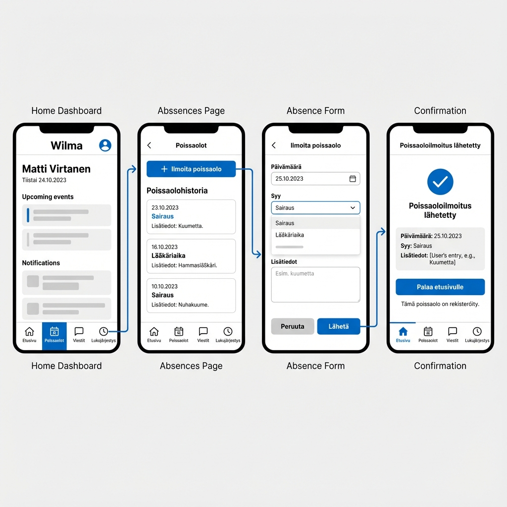

نظرة عامة على المشروع
تفاصيل المهمة
المنصة: Wilma (نظام إدارة المدارس الفنلندي)
الميزة: تسجيل الطالب لغيابه في اليوم التالي
نوع الجهاز: الهاتف المحمول (iOS/Android)
دقة الإطار السلكي: متوسطة الدقة
أداة التصميم: تصميم رقمي بمساعدة الذكاء الاصطناعي
تصميم الإطار السلكي
تدفق المستخدم من 4 شاشات: الصفحة الرئيسية ← الغيابات ← نموذج التقرير ← التأكيد
خطوات تدفق المستخدم
رحلة المستخدم الكاملة
الوقت المقدر للإنجاز
30-60 ثانية من البداية إلى النهاية
الميزات الرئيسية
مواصفات التصميم
لوحة الألوان المتناغمة
الطباعة والمسافات
| العنصر | المواصفات |
|---|---|
| العناوين الرئيسية | 20px، عريض، Sans-serif |
| النص الأساسي | 16px، عادي، Sans-serif |
| نص الأزرار | 16px، نصف عريض، Sans-serif |
| التسميات | 14px، عادي، Sans-serif |
| حشوة الشاشة | 16px |
| مسافة العناصر | 12px |
| ارتفاع الزر | 48px |
| ارتفاع حقل الإدخال | 44px |
تفصيل الشاشات
الشاشة 1: لوحة التحكم الرئيسية
الغرض: نقطة الدخول الرئيسية لجميع ميزات Wilma
العناصر الرئيسية:
- شعار Wilma والعنوان
- عرض اسم الطالب
- التاريخ الحالي
- قائمة التنقل مع 4 أقسام رئيسية
إجراء المستخدم: النقر على "Poissaolot" (الغيابات)
الشاشة 2: نظرة عامة على الغيابات
الغرض: عرض سجل الغيابات وتمكين التقارير الجديدة
العناصر الرئيسية:
- عنوان الصفحة "Poissaolot"
- زر العودة إلى الصفحة الرئيسية
- الإجراء الأساسي: زر "+ Ilmoita poissaolo"
- قائمة الغيابات السابقة مع التواريخ والأسباب
إجراء المستخدم: النقر على "+ Ilmoita poissaolo"
الشاشة 3: نموذج الإبلاغ عن الغياب
الغرض: جمع معلومات الغياب من الطالب
العناصر الرئيسية:
- عنوان النموذج "Ilmoita poissaolo"
- منتقي التاريخ (افتراضي: الغد)
- قائمة منسدلة للسبب (Sairaus، Lääkäriaika، إلخ)
- منطقة نص اختيارية للتفاصيل الإضافية
- أزرار الإلغاء والإرسال
إجراء المستخدم: ملء النموذج والنقر على "Lähetä" (إرسال)
الشاشة 4: التأكيد
الغرض: تأكيد الإرسال الناجح
العناصر الرئيسية:
- أيقونة علامة النجاح
- رسالة التأكيد
- ملخص المعلومات المقدمة
- رسالة إشعار ولي الأمر
- زر "العودة إلى الصفحة الرئيسية"
إجراء المستخدم: النقر على "Palaa etusivulle" للعودة إلى الصفحة الرئيسية
الاعتبارات التقنية
إمكانية الوصول
- نص عالي التباين لسهولة القراءة
- أهداف اللمس بحد أدنى 44x44px (معيار iOS)
- تسميات متوافقة مع قارئ الشاشة
- حالات تركيز واضحة للتنقل
قواعد التحقق
- يجب أن يكون التاريخ غداً أو تاريخ مستقبلي
- يجب اختيار السبب قبل الإرسال
- المعلومات الإضافية اختيارية
- رسائل الخطأ معروضة بشكل مضمن
الإشعارات
- إشعار فوري بالتأكيد للطالب
- إشعار بالبريد الإلكتروني/الرسائل القصيرة لولي الأمر
- إشعار داخل التطبيق مرئي في Wilma
مبررات التصميم
لماذا الهاتف المحمول؟
يستخدم الطلاب عادةً الأجهزة المحمولة للمهام السريعة أثناء التنقل. تسجيل الغياب هو إجراء حساس للوقت غالباً ما يحتاج الطلاب إلى القيام به خارج ساعات الدراسة العادية، مما يجعل الهاتف المحمول المنصة المثالية.
لماذا 4 شاشات؟
يوفر تدفق الشاشات الأربع تقدماً واضحاً ومنطقياً يمنع ارتباك المستخدم مع الحفاظ على البساطة. كل شاشة لها غرض واحد ومركّز، مما يقلل من الحمل المعرفي.
اللغة الفنلندية
يُستخدم Wilma بشكل أساسي في فنلندا، لذا يستخدم الإطار السلكي تسميات فنلندية لتمثيل تجربة المستخدم الحقيقية بدقة. هذه الأصالة مهمة لمراجعة أصحاب المصلحة واختبار المستخدم.
تاريخ الغد المعبأ مسبقاً
بناءً على البحث، معظم تقارير الغياب تكون لليوم التالي. ملء هذا مسبقاً يقلل من الاحتكاك ويسرع العملية لحالة الاستخدام الأكثر شيوعاً.